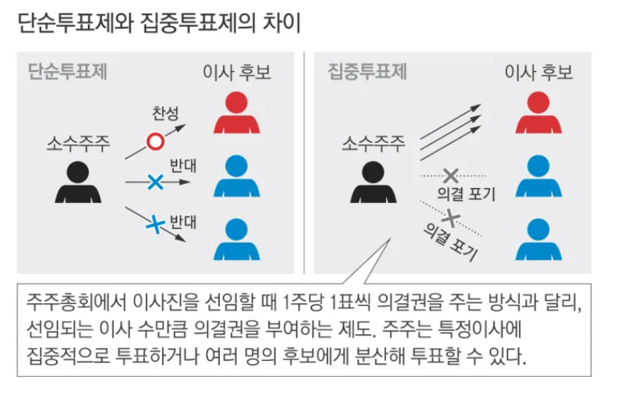

권재열(한국주주총회연구소장, 경희대 법학전문대학원 교수)
상법 개정과 전자주총이 몰고 올
기업 경영의 지각변동
Ⅰ
개정 내용(1): 개관
상법 개정
세 차례 개정, 시행 시점이 단계적으로 겹친다
구분 | 개정 항목 | 조항 | 시행(적용) 시점 |
1차 ('25.7.22.) | 이사의 주주에 대한 충실의무 명문화 | 제382조의3 | '25.7.22. |
사외이사 → 독립이사, 선임비율 ¼ → ⅓ | 제542조의8 등 | '26.7.23.(⅓ 비율은 '27.7.23. 전까지) | |
감사위원 선임·해임 시 최대주주 3% 합산 적용 | 제542조의12 | '26.7.23. | |
전자주주총회(2조원 이상 상장회사 병행 의무) | 제368조의4 등 | '27.1.1. | |
2차 ('25.9.9.) | 집중투표제 의무화(2조원 이상 상장회사) | 제542조의7 제3항 | '26.9.10. (개정 후 최초 이사 선임 주총부터 적용) |
감사위원 분리선출 1인 → 2인 이상 | 제542조의12 제2항 | '26.9.10. | |
3차 ('26.3.6.) | 자기주식 취득 후 1년 내 소각 원칙 | 제341조의4 등 | 공포 즉시 시행 (기존 보유분은 경과규정에 따름) |
Ⅰ
개정 내용(2): 경영의 지각변동
빈번한 상법 개정이 나은 네가지 문제
법무대응이 중요하다
예측가능성의 훼손
기업 활동의 기본법인 상법이 연이어 바뀌어 지배구조 설계의 전제가 흔들림

중첩된 시행과 준수 부담
시행 시점이 엇갈려 정관 개정·이사회 구성·총회 운영을 단계마다 반복 대응

개정 간 정합성 부족
자기주식 소각 의무화·집중투표제 등으로 적대적 M&A에 대한 방어 여지는 줄었으나 대체 장치 논의는 후행. 충실의무 확대의 경영판단 보호 기준도 불명확하다는 지적

해석·하위규범의 후행
법 시행 뒤에야 길라잡이·가이드라인이 마련되어 현장의 해석 혼선과 소송 위험이 커짐
Ⅱ
이사의 충실의무 확대(1): 개정 내용
1차 개정
이사 충실의무의 상대방이 ‘회사’에서 ‘주주’까지 확대
개정 전
•충실의무의 상대방은 회사
•주주 이익은 회사 이익을 통해 간접적으로 보호
•주주 간 불평등 대우에 대한 이사 책임 추궁이 어려움
개정 후 (제382조의3)
•이사는 회사뿐 아니라 주주를 위해서도 충실하게 직무 수행
•총주주의 이익 보호, 주주의 이익을 공평하게 대우
•합병·분할 등 구조개편에서 일반주주 이익 고려 요구 강화
경영에 미치는 영향
의사결정 기준
주주가치·소수주주 영향을
이사회 안건 심의에 반영
기록의 중요성
판단 근거·대안 검토를
의사록에 남기는 관행 정착
책임 리스크
주주 대표소송·손해배상
청구의 법적 근거 확대
경영판단 보호
경영판단원칙 명문화 논의와
함께 균형점 모색
Ⅱ
이사의 충실의무 확대(2): 기업경영에 미치는 영향
의사결정 영역별
주주 간 이해가 충돌하는 거래일수록 이사회의 부담이 커진다
영역 | 예상되는 쟁점 | 경영상 변화 |
합병·분할 등 구조개편 | 지배주주 이익 위주 구조의 일반주주 피해 주장 (합병비율, 물적분할 등) | 소수주주 영향 분석, 외부 평가·공정성 검토 강화 |
자본조달 | 제3자배정 유상증자·CB/BW 등으로 기존 주주 지분 희석 | 발행 목적·가격 정당성 설명, 주주배정 방식 우선 검토 |
지배권 거래 | 경영권 이전 시 이사의 대응·정보제공 (실사 협조, 의견 표명) | 전체 주주에게 공평한 정보·기회 제공 기준 마련 |
이사회 운영 | 의사록 소홀 시 판단의 합리성 입증 곤란 | 대안 검토·근거 자료 문서화, 외부 전문가 자문 활용 |
이사 개인 책임 | 충실의무 위반 주장에 따른 손해배상·소송 리스크 | 임원배상책임보험(D&O) 점검, 내부 가이드라인 수립 |
이사의 충실의무 확대(3): 남은 쟁점과 대응 방향
과제
책임은 넓어졌지만 면책의 기준은 아직 불분명하다
불확실성
공평대우의 범위
모든 주주를 ‘동일하게’ 대우하라는 의미인지, 합리적 차등을 허용하는지
경영판단원칙의 명문화
충분한 정보에 따라 선의로 판단한 이사의 면책 기준을 법에 둘지 논의 중
배임죄와의 관계
민사상 책임 확대와 형사상 배임 위험이 맞물려 의사결정이 위축될 우려
기업의 대응 방향
•이사회 안건 심의 프로세스 정비: 주주별 영향 검토 항목 신설
•중요 거래의 외부 평가·공정성 의견 확보 기준 마련
•의사록에 정보 수집·대안 검토·판단 근거를 구체적으로 기록
•이해상충 이사의 의결 배제와 독립이사 역할 강화
•D&O 보험·내부 지침 정비 및 입법·판례 모니터링
Ⅱ
독립이사 확대(1): 개정 내용
1차 개정
읽는 법
•상장회사 사외이사는 최소 3명 이상 요건이 있어 이사회가 작으면 증원 부담이 작음
•이사회 규모가 클수록 ⅓ 요건의 증원 폭이 커짐
•자산 2조원 이상 상장회사는 기존 과반수 요건이 적용되어 별도 점검 필요(상법 제542조의8 제1항 단서)
※ 필요 인원은 이사 총수 × ¼ 또는 ⅓을 올림한 단순 예시임
Ⅲ
최대주주 중심 이사회 구성이 흔들린다
시사점 지분율이 높아도 독립이사 구성 관련 통제력이 약해져, 후보 풀 확보·정관 정비·소수주주와의 소통이 이사회 운영의 선결과제가 된다.
항목 | 개정 내용 | 적용 대상 | 시행일 |
독립이사 명칭 변경 | 사외이사 → 독립이사 | 상장회사 | '26.7.23. |
독립이사 선임비율 | 이사 총수의 ¼ → ⅓ 이상 | 상장회사 | '27.7.23. 전까지 요건 충족 |
독립이사 확대(2): 기업경영에 미치는 영향
영향 분석
견제 기능은 강화되지만 운영 부담도 함께 커진다
기대 효과
감시·견제 강화 지배주주·경영진 중심 의사결정에 대한 독립적 검증
소수주주 보호 충실의무 확대와 맞물려 일반주주 이익 고려 강화
전문성 다양화 재무·법률·산업·ESG 등 분야별 전문가 참여
투자자 신뢰 지배구조 평가·기업가치 개선에 긍정적일 가능성
예상 부담
후보 풀 부족 독립성·전문성을 갖춘 인력 확보 경쟁
비용 증가 보수, 교육·정보 제공, 사무국 지원 확대
의사결정 속도 이사 수 증가에 따른 숙의·조율 시간 증가
정보 비대칭 내부 정보 접근 한계로 형식적 참여에 그칠 우려
연계 제도 | 경영상 의미 |
집중투표제·감사위원 분리선출 | 독립이사 후보가 소수주주 추천 경로로 선임될 가능성 → 이사회 역학 변화 |
이사 충실의무 확대 | 독립이사의 책임 부담 증가, 판단 근거 기록의 중요성 확대 |
※ 영향은 개정 취지와 일반적 지배구조 논의에 기초한 시사점(전망)이며 개별 회사의 구조에 따라 달라질 수 있음
Ⅲ
Ⅲ
독립이사 확대(3): 대응 방안
대응 과제
’27.7.23. 전까지 단계적으로 이행한다
1단계 현황 진단
•현 이사회 구성·임기 만료 시점 점검
•기존 사외이사의 독립성 요건 재확인
•증원 필요 인원 산정(이사 수 조정 포함)
2단계 후보 확보
•후보추천위원회 기준·절차 정비
•재무·법률·산업 등 역량 매트릭스 작성
•추천 경로 다변화(주주·전문기관)
3단계 선임·정착
•임기 만료에 맞춰 주총 안건으로 단계 선임
•정관·이사회 규정 개정
•취임 교육, 사전 자료 제공 체계
4단계 운영·평가
•독립이사 간담회·위원회 활성화
•이사회 평가와 실효성 점검
•입법·시행령 변경 모니터링
핵심 독립이사는 숫자 충족이 목적이 아니라 이사회 기능을 바꾸는 장치. 선임 시기를 조절하되, 실질적 역할을 보장하는 운영 체계를 함께 설계해야 한다.
※ 단계 구분은 제안이며 법정 절차가 아님.
Ⅳ
감사위원 분리선출 확대 등(1): 개정 내용
1차・2차 개정
늑대떼(wolfpack) 전술 가능
항목 | 개정 내용 | 적용 대상·시행 |
분리선출 인원 | 다른 이사와 분리하여 선출하는 감사위원 1인 → 2인 이상 (정관으로 3인 이상 가능) (제542조의12 제2항) | 자산 2조원 이상 상장회사 ’26.9.10. |
합산 3%룰 | 감사위원 선임·해임 시 최대주주 의결권을 특수관계인 지분과 합산해 3%로 제한 | 감사위원회 설치 상장회사 ’26.7.23. |
읽는 법
•감사위원회는 3명 이상으로 구성되므로 3명 기준 분리선출 2인이면 위원의 과반
•감사위원 수를 늘리면 분리선출 비중은 낮아지지만 이사 수·비용 부담이 커짐
•분리선출 감사위원은 3%룰 적용으로 최대주주 영향력이 제한됨
※ 비중은 단순 계산 예시. 법무부 해석상 ’26.9.10.까지 요건 구비.
Ⅳ
감사위원 분리선출 확대 등(2): 기업경영에 미치는 영향
영향 분석
감사기능은 독립성이 높아지지만 지배구조 운영은 부담이 커진다
기대 효과
감사기능 독립성 최대주주·경영진으로부터 독립된 감시 강화
소수주주 영향력 3%룰과 결합해 소수주주 추천 후보의 선임 가능성 증대
내부통제 실효성 회계·재무 위험의 조기 발견과 시정
투자자 신뢰 지배구조 평가에 긍정적일 가능성
예상 부담
최대주주 통제력 약화 감사위원 선임 결과의 불확실성 증가
후보 확보 회계·재무·법률 전문성을 갖춘 인력 경쟁
비용·절차 정관 개정, 주총 안건 설계, 위원회 운영비 증가
이사회 갈등 경영진과 감사위원 간 견해 충돌 가능성
연계 제도 | 경영상 의미 |
집중투표제 의무화 | 이사 선임 단계에서 소수주주 추천 이사의 진입 → 감사위원 후보 풀로 연결 가능 |
독립이사 ⅓ 확대 | 감사위원은 독립이사 중에서 구성되는 구조와 맞물려 후보 선발 계획 통합 필요 |
※ 영향은 개정 취지와 일반적 지배구조 논의에 기초한 시사점(전망)이며 개별 회사의 지분구조에 따라 달라질 수 있음
Ⅳ
감사위원 분리선출 확대 등(3): 대응 방안
대응 과제
정관 정비부터 운영 체계까지 단계적으로 이행한다
1단계 정관 점검
•분리선출 감사위원 수 및 총원 확정
•감사위원 증원 시 이사 총수 조정
•관련 조항 정관 변경(특별결의 일정 확보)
2단계 지분 분석
•최대주주·특수관계인 지분 합산
•3%룰 적용 시 의결권 구조 시뮬레이션
•의결권 행사 가능 지분 예측
3단계 후보 확보
•회계·재무·법률 역량 매트릭스
•후보 추천 절차의 투명성 확보
•소수주주 추천 후보 대응 방안
4단계 운영 정착
•감사위원회 정보 접근·사무국 지원
•내부통제·외부감사인 소통 강화
•입법·시행령 모니터링
핵심 분리선출 확대는 감사위원 구성의 ‘예측 가능성’을 낮추며, 최대주주가 되고자 하는 유인을 줄인다.
※ 단계 구분은 제안이며 법정 절차가 아님.
Ⅴ
전자주주총회 의무화(1): 개관
1차 개정
’27.1.1.부터 자산 2조원 이상 상장회사는 전자주총을 병행 개최 의무
’25.7.22.
1차 개정 시행
’26.7.23.
독립이사 등
후속 시행
’27.1.1.
전자주총
시행
’27년 정기주총
첫 적용 시즌
구분 | 의무 내용 | 비고 |
자산 2조원 이상 상장회사 | 전자주주총회를 병행하여 개최할 의무 | 오프라인 주총과 병행 |
그 외 상장회사 | 전자주주총회를 병행 개최할 수 있음 (선택) | 정관 정비 후 도입 |
세부 절차 | 본인확인, 의결권 행사, 의사진행 등은 하위법령(시행령)에 위임 | 시행령/가이드라인 확인 필요 |
Ⅴ
전자주주총회 의무화(2): 무엇이 달라지나
비교
물리적 총회 중심에서 온·오프라인 병행 구조로
구분 | 기존 주주총회 | 전자주주총회 병행 |
참석 방식 | 지정 장소에 직접 출석 (또는 서면·전자투표, 위임장) | 오프라인 + 온라인 실시간 참석 (원격 참석 확대) |
의결권 행사 | 현장 투표 또는 사전 전자투표 | 사전 행사 + 총회 중 온라인 의결 |
소수주주 접근성 | 지리적·시간적 제약으로 참여 한계 | 접근성 개선, 참석·발언 확대 가능 |
운영 주체의 부담 | 장소·인력 중심 | 관리기관(플랫폼) 이용·보안·본인확인·장애 대응 중심 |
핵심 전자주총은 투표 편의 제도가 아니라 주주의 참여 구조 자체를 바꾸는 제도로, 총회 운영의 전제가 달라진다.
※ 비교 내용은 제도 취지에 기초한 일반적 사항에 지나지 않음
Ⅴ
전자주주총회 의무화(3): 기업경영에 미치는 영향
영향 분석
주주 참여는 넓어지고, 총회 운영은 더 정교해져야 한다
기대 효과
참여 확대 원거리·해외 주주 등 참석 기회 확대
소통 강화 질의·발언을 통한 경영진과 주주 간 직접 소통
투명성 총회 진행과 의결 과정의 기록·검증 용이
신뢰도 제고 주주 친화적 지배구조로 평가될 가능성
예상 부담
안건 부결 리스크 참여 주주 증가로 결과 예측이 어려워질 가능성
운영 비용 관리기관(플랫폼) 이용·보안·인력 활용 비용 증가
기술·법적 리스크 접속 장애, 본인확인 오류 시 결의 하자 다툼
경영진 부담 실시간 질의에 대한 대응 역량 요구
연계 제도 | 경영상 의미 |
집중투표제·감사위원 분리선출 | 소수주주의 참여가 늘수록 이사·감사위원 선임에서 표 결집 영향 증대 |
이사 충실의무 확대 | 총회 질의·설명 과정에서 이사의 설명 책임이 부각될 수 있음 |
※ 영향은 제도 취지에 기초한 시사점(전망)이며 개별 회사의 주주 구성에 따라 달라질 수 있음
Ⅴ
전자주주총회 의무화(4): 주총 운영 실무의 변화
실무 점검
소집부터 결의 기록까지 운영 체계 전반을 재설계해야 한다
단계 | 주요 과제 | 점검 사항 |
소집·통지 | 온라인 참석 방법·접속 정보 안내 | 소집통지·공고 서식, 정관의 근거 규정 정비 |
본인확인 | 온라인 참석 주주의 신원·의결권 확인 | 인증 수단, 주주명부와의 연동, 위임 처리 |
질의·발언 | 온라인 참석자의 질의 접수·답변 | 질의 접수 절차, 의장의 의사진행 규칙 |
의결·집계 | 현장·온라인·사전 투표의 통합 집계 | 집계 시스템, 표결 방식, 결과 검증 체계 |
기록·보관 | 총회 진행·의결 과정의 기록 | 의사록 작성, 로그 보관, 분쟁 대비 증빙 |
장애 대응 | 접속 장애·보안 사고 대비 | 예비 시스템, 중단·속개 규정, 사전 리허설 |
※ 제도 취지에 따른 일반적 점검 항목을 정리한 것임
Ⅴ
전자주주총회 의무화(5): 대응 로드맵
대응 과제
’27.1.1. 시행 전 시스템·정관·소통 체계를 마련한다
1단계 현황 진단
•의무 대상 해당 여부 확인
•주주 구성(소액·해외 주주) 분석
•현행 총회 운영 절차 점검
2단계 제도 설계
•정관·주주총회 규정 개정
•매뉴얼 ·가이드라인 숙지
•운영 규칙(질의·의사진행) 마련
•관리기관(플랫폼) 선정 이사회 의결
3단계 시스템 구축(선정)
•관리기관과 연계하여 보안·본인확인, 결과 집계·기록 보관 체계 확인
•장애 대비 예비 방안 설계
4단계 시행·정착
•사전 리허설과 임직원 교육
•첫 정기주총 모니터링
•주주 소통 강화, 개선 환류
핵심 전자주총은 시스템 도입 문제가 아니라 주주 참여 전략의 문제로, 첫 정기주총 전에 리허설을 포함한 운영 체계를 갖춰야 한다.
※ 단계 구분은 제안이며 법정 절차가 아님
Ⅵ
집중투표제 의무화(1): 개정 내용
2차 개정
2조원 이상 상장회사는 정관으로 집중투표제를 배제할 수 없다
항목 | 개정 내용 | 시행·적용 |
배제 불허 | 정관으로 집중투표를 배제할 수 없음 (제542조의7 제3항) 대상: 자산총액 2조원 이상 상장회사 | ’26.9.10. |
적용 범위 | 개정 후 최초로 이사 선임을 위해 소집되는 주주총회부터 적용 | 시행 후 첫 이사 선임 주총 |
기존 정관 | 집중투표 배제 조항은 강행규정 위반으로 무효가 될 가능성 (부칙에 명시 없음, 로펌 견해) | 정관 정비 필요 |
8.0%
대규모 상장회사 264곳 중
도입 21곳 (’25.6.30. 기준)
•이론값 = 1÷(선임 이사 수+1)
•선임 이사 수가 많을수록 소수주주의 진입 문턱이 낮아짐
Ⅵ
집중투표제 의무화(2): 효과
집중투표제 의무화
배제 조항이 사라져서 소수주주도 이사를 배출한다
•경영상 파급
•이사 수 상한을 정관에 두면 소수주주가 이사를 선임하는 데 필요한 지분율이 높아져 방어 효과 (이사 수가 많을수록 문턱은 낮아짐)
•시차임기제(분산 임기) 도입, 이사 임기 만료 현황 점검 등이 선제 대응 방안으로 거론됨
•행동주의 펀드·소수주주 연대의 이사 추천 전략이 현실화될 가능성

※ 출처: 경향신문(2020.9.27.)
의결권 없는 주식을 제외한 발행주식총수의 1% 이상을 보유한 주주가 주주총회일 6주 전까지 서면 또는 전자문서로 청구할 수 있음
Ⅵ
집중투표제 의무화(3): 기업경영에 미치는 영향
영향 분석
이사회 구성의 예측 가능성이 낮아지고 지배구조 전략이 바뀐다
기대 효과
소수주주 대표성 지분율에 비례한 이사회 진입 경로 확보
견제 기능 강화 이사회 내 다양한 시각과 감시 기능
주주 소통 활성화 소수주주 의견을 경영에 반영할 유인
투자자 신뢰 지배구조 평가 개선 가능성
예상 부담
경영권 불안 행동주의 펀드·적대적 인수 시도의 이사회 진입 용이
이사회 갈등 특정 주주 추천 이사와 경영진 간 의견 충돌
정보 유출 우려 이사회 기밀의 선택적 사용 가능성
의사결정 지연 이해관계 대립에 따른 숙의 시간 증가
연계 제도 | 경영상 의미 |
감사위원 분리선출 확대 | 집중투표로 선임된 이사가 감사위원 후보 풀로 연결될 가능성 |
경영권 방어수단 공백 | 차등의결권·포이즌필 등 방어 장치가 입법 계류 중이어서 대응 수단이 제한적 |
※ 영향은 개정 취지와 일반적 지배구조 논의에 기초한 시사점(전망)이며 개별 회사의 지분구조에 따라 달라질 수 있음
Ⅵ
집중투표제 의무화(4): 대응 방안
대응 과제
정관 정비와 이사회 구조 설계를 주총 전에 마친다
1단계 정관 점검
•집중투표 배제 조항 삭제·정비
•이사 총수 상한 규정 검토
•임기·선임 방식 규정 점검
2단계 지분 분석
•주주 구성·지분 분포 파악
•주요 주주의 연대 가능성 평가
•집중투표 시 당선 시뮬레이션
3단계 구조 설계
•시차임기제(임기 분산) 도입 검토
•이사 임기 만료 현황 점검
•이사 수 조정 효과 분석
4단계 소통·운영
•주주와의 정기 소통(IR)
•이사 선임 절차의 투명성 강화
•입법 동향(방어수단·공개매수) 모니터링
핵심 집중투표 배제라는 ‘방패’가 사라진 만큼, 이사 수·임기 설계와 주주 소통이 새로운 방어이자 신뢰 전략이 된다.
※ 단계 구분은 제안이며 법정 절차가 아님. 이사 수 상한·시차임기 설계는 정관 규정 필요
Ⅶ
자기주식 소각 의무화(1): 개정 내용
3차 개정
자기주식은 ‘보유 자산’에서 ‘1년 내 소각 대상’으로
구분 | 주요 내용 | 조항 |
원칙 | 취득한 자기주식은 취득일부터 1년 내 소각 | 제341조의4 ① |
예외 | 이사회 보유·처분계획 수립 → 주총 승인, 매년 정기주총 갱신 (신기술 도입·재무구조 개선 등은 정관 변경 특별결의 선행) | 제341조의4 ②③ |
권리 제한 | 의결권·신주인수권 등 행사 불가, 자기주식 교환사채 발행 금지 | 제341조의3 |
처분 방식 | 주주 지분율에 비례한 처분 원칙 | 제342 |
제재 | 소각 의무 위반 시 이사에게 5천만원 이하 과태료 | 제635 |
경과규정
•기존 보유분: 6개월 준비 + 1년 소각 (총 1.5년)
•외국인 한도 업종(방송·통신·항공 등)은 3년
•주주총회 승인 시 보유·처분 가능
경영상 변화
•‘자사주 마법’·우호지분 확보 수단 약화
•주주환원은 소각 전제로 설계
•임직원 보상 재원·CB/BW 등 대체 조달 점검
※ 최대주주 의결권 3% 제한안은 최종 개정안에서 제외됨
Ⅶ
자기주식 소각 의무화(2): 예외와 경과규정
예외·경과
보유가 허용되려면 주주총회 승인이 매년 필요하다
예외적 보유·처분 (제341조의4 ②③)
•임직원 보상, 종업원지주제 등 법정 사유가 있는 경우에 한함
•이사회가 보유·처분계획 수립 → 주주총회 승인
•승인은 매년 정기주주총회에서 갱신
•신기술 도입·재무구조 개선 등 사유는 정관을 특별결의로 먼저 변경
기존 보유분 경과규정
•직접 취득분: 6개월 준비 + 1년 소각 (총 1.5년)
•외국인 투자 한도 업종(방송·통신·항공 등): 3년의 처분 유예
•기간 내 소각하거나 보유·처분계획에 대해 주총 승인 필요
•최대주주 의결권 3% 제한안은 최종안에서 제외
공포 시행
+6개월 준비 기간
+1.5년 기존 보유분 기한
Ⅶ
자기주식 소각 의무화(3): 기업경영에 미치는 영향
영향 분석
자기주식은 ‘경영 수단’에서 ＇임직원 보상 수단’•‘주주환원 수단’으로 성격이 바뀐다
기대 효과
주주가치 제고 소각으로 발행주식 수 감소 → 주당 가치 개선 효과
지배구조 투명성 자사주를 이용한 지배력 확대 논란 해소
주주환원 신뢰 환원 정책의 일관성 확보
자본정책 단순화 자기주식 장기 보유 관련 불확실성 감소
예상 부담
경영권 방어 약화 우호지분 확보·방어 수단으로서 활용 곤란
유연성 상실 M&A 대가·보상 재원 등으로 활용 제약
현금 부담 취득 후 소각을 전제로 한 자금 계획 필요
규제 리스크 기간 도과 시 이사 과태료 등 책임
연계 제도 | 경영상 의미 |
집중투표제·감사위원 분리선출 | 방어 수단 약화와 소수주주 이사 진입이 겹쳐 경영권 안정성 이슈 증대 |
경영권 방어수단 입법 | 차등의결권·포이즌필 등 방어 법안은 계류 중으로 보완 장치 미비 |
※ 영향은 개정 취지에 기초한 시사점(전망)이며 개별 회사의 지분구조·재무상황에 따라 달라질 수 있음
Ⅶ
자기주식 소각 의무화(4): 경영 영역별 변화
영역별 분석
자본정책부터 M&A까지 자사주 활용 방식이 재편된다
영역 | 개정 전 | 개정 후 | 경영상 파급 |
주주환원 정책 | 취득 후 장기 보유·재활용 가능 | 취득 후 1년 내 소각 원칙 | 배당·소각 중심의 환원 설계 |
경영권·M&A | 자사주 처분을 통한 우호 지분 확보 | 처분시 신주발행 규제 준용 | 방어 수단 약화, 전략 재검토 |
임직원 보상 | 보유 자사주를 보상 재원으로 활용 | 예외 사유와 주총 승인 필요 | 보상 재원·계획의 사전 설계 |
자금조달 | 자사주 연계 교환사채 등 활용 | 자기주식 교환사채 발행 금지 | CB·BW 등 대체 수단 점검 |
재무·회계 | 자사주 보유에 따른 자본 항목 유지 | 소각에 따른 자본·주식수 변동 | EPS·자본구조 지표 영향 분석 |
※ ‘경영상 파급’은 시사점(전망)임. 회계·세무 처리는 전문가 검토 필요.
Ⅶ
자기주식 소각 의무화(5): 대응 로드맵
대응 과제
기존 보유분 처리 방향부터 자본정책 재설계까지
1단계 현황 진단
•자기주식 보유 현황·취득 시점 정리
•경과규정상 기한 산정
•소각·보유 필요성 구분
2단계 방향 결정
•기존 보유분의 소각·처분 방안 결정
•보유 시 보유·처분계획 문서화
•정관에 보유 근거 마련 검토
3단계 이행
•이사회·주총 절차 진행
•소각 회계·세무 처리, 공시
•임직원 보상·대체 자금조달 수단 점검
4단계 정책 재설계
•주주환원·배당 정책 수립
•주주 소통(IR) 강화
•입법 동향 모니터링
핵심 자사주를 ‘쌓아두는’ 전략은 더 이상 어렵다. 취득 단계부터 소각을 전제로 한 자본정책과 주주환원 계획을 설계해야 한다.
※ 단계 구분은 제안이며 법정 절차가 아님
Ⅷ
종합: 경영의 지각변동
핵심 정리
다섯 영역의 경영 규칙이 동시에 바뀐다
영역 | 개정 전 | 개정 후 | 경영상 파급 |
이사의 판단 기준 | 회사 이익 중심 | 회사 + 총주주 이익 (제382조의3) | 주주가치 근거의 문서화 |
이사회 구성 | 사외이사 ¼ 집중투표 배제 가능 | 독립이사 ⅓ 집중투표 의무(2조원 이상) | 소수주주·행동주의 추천 이사 진입 |
감사위원회 | 분리선출 1인 최대주주 개별 3% | 분리선출 2인 이상 최대주주 특수관계인 합산 3% | 최대주주 통제력 약화 |
자본정책 | 자기주식 보유·활용 자유 | 취득 후 1년 내 소각 원칙 | 주주환원 상시화, 방어수단 약화 |
주주총회 | 오프라인 중심 | 전자주총 병행 (2조원 이상 의무) | 참여 구조 변화, 운영 리스크 |
Ⅸ
입법 관련 남은 쟁점
입법 과제
보호는 강화되었지만 방어와 면책 장치는 아직 공백
경영판단원칙 명문화
충분한 정보로 선의에 따라 판단한 이사는 손실이 나도 책임을 지지 않는다는 취지의 법안 논의 / 배임죄 개선 병행 검토
경영권 방어수단
차등의결권·포이즌필·지분취득 공시 강화 등 3개 법안이 법사위 계류 (’26.1. 발의)
의무공개매수
자본시장법 개정안: 특수관계인 합산 25% 도달 시 잔여주식 전부 공개매수
한국형 베어허그·시세조종 방지
대상회사 이사회의 인수제안 검토 및 주주 공시 규정 논의
역사의 교훈: 섀도보팅 폐지
2017년 말 폐지 후
76개사 2018년 안건 부결
56개사 감사 선임 불발
제도 변화가 정족수 문제로 이어졌다는 지적 → 2020년 전자투표 도입사의 감사 선임 정족수 완화
-이번 상법 개정하 지배구조 안정성 점검 필요
-전자주총 의무회사도 전자투표는 여전히 유지하여야 함
※ 법안 현황은 국회 심의 경과에 따라 변동될 수 있음
Ⅹ
입법 변화에 따른 기업의 대응 로드맵
대응 과제
정관·이사회·자본정책을 시점별로 정비한다
즉시 ~ ’26.12.
•자기주식 보유 현황 점검, 소각 또는 보유·처분계획 마련
•정관 점검: 집중투표 배제 조항, 감사위원 분리선출·총수
•이사회 의사록·판단 근거 작성 체계 정비
’27.1.1. 전
•전자주주총회 관리기관(플랫폼) 선정·정관·시행령∙가이드라인 대응
•정기주총 일정에 맞춘 안건 설계
•주주 소통(IR) 채널 확대
’27.7.23. 전
•독립이사 ⅓ 충족 단계별 이행
•임기 만료에 맞춘 후보 풀 확보
•시차임기제 등 이사회 구조 설계
상시
•주주환원·자본정책 재설계
•경영판단원칙·방어수단·의무공개매수 입법 모니터링
•소수주주·행동주의 대응 시나리오
※ 시점은 현재까지 공개된 시행일 기준이며, 개별 회사의 정관·지분구조에 따라 구체적 일정은 달라질 수 있음